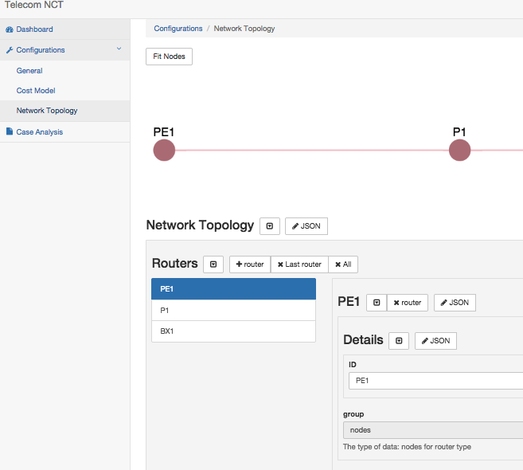

Telecom Network Costing Tool
Telecom-NCT is a customizable web application designed to estimate the cost of a given network topology.

Detailed Router Cost Configuration.
Dynamic Visualizations
Implementation for DSL and VPN Topologies
>Demo